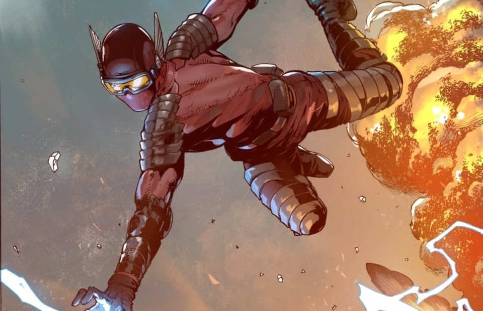

Tidak kalah dengan superhero keluaran Marvel maupun DC, ternyata Indonesia juga memiliki tokoh superhero yang tidak kalah keren, loh! Beberapa diantaranya juga telah diangkat menjadi film layar lebar Indonesia. Siapa saja tokoh-tokoh superhero Indonesia? Berikut adalah 5 tokoh superhero terkenal dari Indonesia.
Gundala merupakan superhero Indonesia yang memiliki nama asli Sancaka. Ia memiliki kekuatan super yang dapat mengeluarkan petir dari telapak tangannya. Karakter Gundala sendiri telah diangkat ke film layar lebar sebanyak 2 kali, yaitu pada tahun 1981, dan 2019.
Wiro Sableng merupakan karakter superhero yang dibuat pada tahun 1989 oleh Bastian Tito. Wiro Sableng menguasai ilmu bela diri yang dilatih oleh gurunya dan memiliki senjata sakti bernama Kapak Maut Naga. Tahun 2018, karakter Wiro Sableng mulai diangkat ke film layar lebar.
Sri Asih merupakan karakter superhero wanita asal Indonesia yang diciptakan tahun 1954. Sri Asih memiliki kekuatan bela diri yang setara dengan 250 pria dewasa. Sri Asih juga mampu terbang, menggandakan diri, kebal, serta membesarkan tubuhnya. Tokoh Sri Asih diangkat ke dalam film layar lebar pada tahun 2022 yang diperankan oleh Pevita Pearce.
Gatotkaca adalah tokoh pewayangan yang sangat popular dalam wiracarita Mahabarata. Tokoh Gatotkaca digambarkan sebagai superhero yang dapat terbang mirip Superman, memiliki otot kawat tulang besi dan sekali pukul maka lawan akan langsung hancur.
Jika di dunia Barat kalian mengenal Robin Hood maka orang Betawi mengenal sosok tersebut sebagai Si Pitung. Si Pitung menceritakan sosok pahlawan Betawi yang berusaha menolong rakyat sekitarnya dengan cara mengambil harta kaum penindas dan membagikannya kepada rakyat yang tertindas dan membutuhkan.
Bagaimana? Menarik, bukan? klik di sini untuk mengetahui lebih lengkap tentang superhero Indonesia!
Referensi